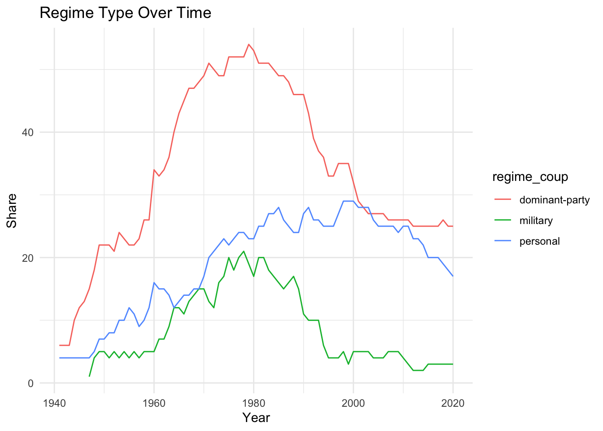

pacman::p_load(tidyverse, janitor, data.table, readxl, vdemdata, zoo, democracyData, fuzzyjoin, survival)Setup
leaders dataset
Archigos Dataset
# Download Archigos data
archigos_url <- "http://ksgleditsch.com/data/1March_Archigos_4.1.txt"
archigos_raw <- fread(archigos_url, encoding = "Latin-1")
# Clean and process Archigos data
archigos <- archigos_raw |>
mutate(
startdate = ymd(startdate),
enddate = ymd(enddate),
# Correct start dates for specific observations
startdate = case_when(
obsid == "GAB-1964-2" ~ ymd("1960-08-17"),
obsid == "CHA-1990" ~ ymd("1990-12-2"),
obsid == "RUS-2000" ~ ymd("1999-12-31"),
TRUE ~ startdate
),
entry = case_when(
obsid == "GAB-1964-2" ~ "Regular",
TRUE ~ entry
)
) |>
filter(!obsid %in% c("GAB-1960", "GAB-1964-1"),
startdate != enddate)
# Save cleaned Archigos data
write_csv(archigos, "archigos_clean.csv")PLAD Dataset
# Download PLAD data
plad_url <- "https://dataverse.harvard.edu/api/access/datafile/10119324"
download.file(plad_url, "PLAD.xls")
# Read and process PLAD data
plad_raw <- read_excel("PLAD.xls") |>
mutate(
exit = case_when(
exit == "Still in office" ~ "Still in Office",
TRUE ~ exit
)
)
# Save cleaned PLAD data
write_csv(plad_raw, "plad_clean.csv")
plad <- plad_raw |>
select(country, continent, 1:6, entry, exit, gender, yrborn, birthdate) |>
mutate(
startdate = dmy(startdate),
birthdate = dmy(birthdate),
enddate = case_when(
exit == "Still in Office" ~ Sys.Date(),
TRUE ~ dmy(enddate)
),
yrborn = as.numeric(yrborn)
) |>
filter(startdate != enddate)Warning: There were 2 warnings in `mutate()`.
The first warning was:
ℹ In argument: `birthdate = dmy(birthdate)`.
Caused by warning:
! 402 failed to parse.
ℹ Run `dplyr::last_dplyr_warnings()` to see the 1 remaining warning.# Save processed PLAD data for further analysis
write_csv(plad, "plad_processed.csv")Leaders Dataset: Archigos and PLAD
# Combine Archigos and PLAD data
leaders <- archigos |>
full_join(plad, by = join_by(idacr, startdate), suffix = c(".archigos", ".plad")) |>
group_by(idacr) |>
fill(ccode, country, continent, .direction = "downup") |>
ungroup() |>
mutate(
obsid = coalesce(obsid, plad_id),
leader = coalesce(leader.archigos, leader.plad),
enddate = coalesce(enddate.plad, enddate.archigos),
entry = coalesce(entry.plad, entry.archigos),
exit = coalesce(exit.plad, exit.archigos),
enddate = if_else(exit == "Still in Office", Sys.Date(), enddate),
gender = coalesce(gender.archigos, gender.plad),
yrborn = coalesce(yrborn.archigos, as.numeric(yrborn.plad)),
age = year(enddate) - yrborn,
exitcode = case_when(
is.na(exitcode) ~ exit,
exitcode == "Still in Office" & exit != "Still in office" ~ exit,
TRUE ~ exitcode
),
exitcode = case_when(
leader %in% c("Mugabe", "Al-Bashir", "Ibrahim Boubacar Keita", "Win Myint", "Deby", "Conde", "Bah Ndaw", "Roch Marc Christian Kabore", "Paul-Henri Sandaogo Damiba", "Ali Bongo Ondimba", "Mohamed Bazoum") ~ "Coup",
TRUE ~ exitcode
)
) |>
select(1:4, country, continent, leader, startdate, enddate, entry, exit, exitcode, gender, yrborn) |>
arrange(ccode, startdate) |>
filter(year(enddate) > 1940)
# Save combined leaders dataset
write_csv(leaders, "leaders_combined.csv")Coup analysis dataset
Polity5 Dataset
polity5 <- democracyData::polity5 |>
mutate(polity5 = ifelse(polity < -10, NA, polity)) |>
select(ccode = polity_annual_ccode, year, polity5) |>
group_by(ccode) |>
fill(polity5, .direction = "up") |>
mutate(polity_lead3 = lead(polity5, 3),
polity_lead5 = lead(polity5, 5)) |>
ungroup() |>
filter(year >= 1940)Political Violence Dataset: MEPV
# Download MEPV data
violence_url <- "http://www.systemicpeace.org/inscr/MEPVv2018.xls"
download.file(violence_url, "political_violence_2018.xls")
political_violence <- read_excel("political_violence_2018.xls") |>
select(ccode, year, violence = actotal)GDP and population Dataset
GDP <- vdem |>
select(ccode = COWcode, country = country_name, year, GDP_pc = e_gdppc, pop = e_pop) |>
filter(year >= 1940) |>
# Create a new variable for 5-year moving average of GDP growth
mutate(GDP_trend = GDP_pc / lag(rollapply(GDP_pc,
width = 5,
FUN = mean,
align = 'right',
fill = NA)),
.by = c(ccode)) |>
mutate(pop_log = log(pop)) |>
select(ccode, year, GDP_pc, GDP_trend, pop_log)Regime Type Dataset
regimes <- REIGN |>
select(
ccode = GWn,
country = extended_country_name,
year,
regime_type = gwf_regimetype
) |>
distinct(ccode, year, .keep_all = T) |>
mutate(
regime_coup = case_when(
regime_type %in% c(
"party-based",
"party-personal",
"party-military",
"party-personal-military",
"oligarchy"
) ~ "dominant-party",
regime_type == "personal" ~ "personal",
regime_type %in% c("military", "military personal", "indirect military") ~ "military",
regime_type == "monarchy" ~ "monarchy",
regime_type %in% c("presidential", "parliamentary") ~ "democracy",
TRUE ~ "other"
),
regime_autocoup = case_when(
regime_type %in% c(
"party-based",
"party-personal",
"party-military",
"party-personal-military",
"oligarchy"
) ~ "dominant-party",
regime_type == "personal" ~ "personal",
regime_type %in% c("military", "military personal", "indirect military") ~ "military",
regime_type == "monarchy" ~ "monarchy",
regime_type == "presidential" ~ "presidential",
regime_type == "parliamentary" ~ "parliamentary",
TRUE ~ "other"
)
) |>
select(country, ccode, year, regime_coup, regime_autocoup)
regimes |>
select(regime_coup,year) |>
filter(year > 1940,
year < 2021,
regime_coup %in% c("dominant-party", "military", "personal")
) |>
group_by(year, regime_coup) |>
summarise(count = n()) |>
mutate(share = count / sum(count)) |>
#view()
#filter(regime_coup != "democracy") |>
ggplot(aes(x = year, y = count, color = regime_coup)) +
geom_line() +
labs(title = "Regime Type Over Time", x = "Year", y = "Share") +
theme_minimal()`summarise()` has grouped output by 'year'. You can override using the
`.groups` argument.
regimes |>
select(regime_coup, year) |>
filter(year > 1940, year < 2021) |>
count(year, regime_coup) |>
pivot_wider(
names_from = regime_coup,
values_from = n,
values_fill = 0
) |>
rowwise() |>
mutate(total = sum(across(-year))) |>
rename_all(str_to_title) |>
tail(10)# A tibble: 10 × 8
# Rowwise:
Year Democracy `Dominant-Party` Monarchy Personal Other Military Total
<dbl> <int> <int> <int> <int> <int> <int> <int>
1 2011 119 26 13 25 8 3 194
2 2012 123 25 13 23 8 2 194
3 2013 123 25 13 23 8 2 194
4 2014 123 25 13 22 9 2 194
5 2015 126 25 13 20 7 3 194
6 2016 127 25 13 20 6 3 194
7 2017 127 25 13 20 6 3 194
8 2018 128 26 13 19 5 3 194
9 2019 130 25 13 18 5 3 194
10 2020 128 25 13 17 8 3 194Coup Analysis Dataset
# Download coup data
coup_url <- "https://www.uky.edu/~clthyn2/coup_data/powell_thyne_ccode_year.txt"
coup_all <- fread(coup_url) |>
mutate(
coup = case_when(
coup1 == 0 ~ 0,
coup1 == 2 | coup2 == 2 | coup3 == 2 | coup4 == 2 ~ 2,
TRUE ~ 1
)
) |>
group_by(ccode) |>
arrange(year) |>
mutate(
pre_coups = lag(cumsum(coup %in% c(1, 2)), default = 0),
last_coup_year = lag(case_when(
coup %in% c(1, 2) ~ year,
TRUE ~ NA_integer_
)),
last_coup_year = case_when(
year == min(year) ~ year,
TRUE ~ last_coup_year
)
) |>
fill(last_coup_year, .direction = "down") |>
mutate(
time_since_last_coup = year - last_coup_year,
coup_dummy = case_when(
pre_coups == 0 ~ 0,
TRUE ~ 1
)
) |>
select(ccode, year, coup, pre_coups, time_since_last_coup, coup_dummy)
write.csv(coup_all, "coup_all.csv")
coup_all |>
select(year, coup) |>
group_by(year) |>
summarise(count = sum(coup)) |>
ggplot(aes(x = year, y = count)) +
geom_line() Adding missing grouping variables: `ccode`
Coup Analysis Model
coup_model <- regimes |>
#filter(regime_coup != "other") |>
left_join(coup_all, by = join_by(ccode, year)) |>
left_join(political_violence, by = join_by(ccode, year)) |>
left_join(GDP, by = join_by(ccode, year)) |>
mutate(violence = na.locf(violence, .by = ccode, na.rm = FALSE)) |>
mutate(regime = fct_relevel(regime_coup, "dominant-party"),
ect = (GDP_trend - 1) * 100) |>
filter(year > 1949) |>
select(ccode, country, year, coup, regime = regime_coup, GDP_trend = ect, GDP_pc, violence, pre_coups, coup_dummy, time_since_last_coup)
# Save the coup analysis model
write_csv(coup_model, "coup_model.csv")Autocoup analysis Dataset
Autocoup Dataset
# Read autocoup data
autocoup_raw <- read_excel("Autocoup.xlsx", na = "Incumbent") |>
mutate(exit_date = replace_na(exit_date, Sys.Date()),
across(everything(),str_to_sentence))
autocoup <- autocoup_raw |>
select(1:14) |>
mutate(
ccode = as.integer(ccode),
entry_date = as.Date(entry_date),
exit_date = as.Date(exit_date),
extending_date = make_date(year = extending_date, month = month(entry_date), day = day(entry_date)),
autocoup_date = as.integer(autocoup_date)
)
# autocoup |>
# select(8:13) |>
# dfSummary() |>
# stview()
# Save cleaned autocoup data
write_csv(autocoup, "autocoup_clean.csv")Leader_autocoup Dataset
leader_autocoup <- leaders |>
left_join(autocoup, by = join_by(ccode, startdate == entry_date)) |>
mutate(
autocoup_attempt = if_else(is.na(leader_name), 0, 1),
autocoup_success = if_else(!is.na(extending_date), 1, if_else(!is.na(autocoup_attempt), 0, NA)),
base_year = year(startdate + as.numeric(difftime(enddate, startdate, units = "days")) / 2),
base_year = coalesce(autocoup_date, base_year),
age = base_year - yrborn
) |>
select(1:2, leader, leader_name, age, everything())Autocoup Analysis Model
autocoup_model <- leader_autocoup |>
filter(base_year > 1944) |>
left_join(regimes, by = join_by(ccode, base_year == year)) |>
group_by(ccode) |>
fill(regime_autocoup, .direction = "updown") |>
ungroup() |>
left_join(political_violence, by = join_by(ccode, base_year == year)) |>
mutate(violence = na.locf(violence, .by = ccode),
autocoup_outcome = case_when(autocoup_outcome == "Yes" ~ 2,
autocoup_outcome == "No" ~ 1,
TRUE ~ NA_real_)
) |>
left_join(GDP, by = join_by(ccode, base_year == year)) |>
filter(!is.na(GDP_pc),
regime_autocoup != "parliamentary") |>
left_join(polity5, by = join_by(ccode, base_year == year)) |>
select(ccode, country, base_year, leader, autocoup_attempt, autocoup_outcome, regime = regime_autocoup, GDP_pc, GDP_trend, polity5, polity_lead3, polity_lead5, violence, age, pop_log)
# Save the autocoup analysis model
write_csv(autocoup_model, "autocoup_model.csv")Survival Analysis Dataset
coup_success <- fread("https://www.uky.edu/~clthyn2/coup_data/powell_thyne_coups_final.txt") |>
mutate(coup_date = make_date(year = year, month = month, day = day)) |>
select(ccode, country, coup_date, coup, year) |>
filter(coup == 2)overstay_leaders <- autocoup |>
filter(autocoup_outcome == "Yes") |>
select(1:14)survival_data <- leaders |>
left_join(overstay_leaders, by = join_by(ccode, startdate == entry_date)) |>
mutate(
coup_exit = ifelse(exitcode %in% c("Removed by Military, without Foreign Support", "Removed by Other Government Actors, without Foreign Support", "Coup"), 1, 0),
coup_entry = ifelse(lag(coup_exit == 1), 1, 0),
.by = ccode
) |>
filter(!is.na(extending_date) | coup_entry == 1, year(enddate) > 1945) |>
mutate(
group = case_when(!is.na(extending_date) ~ "A", .default = "B"),
enddate = case_when(leader == "Azali Assoumani" ~ Sys.Date(), TRUE ~ enddate),
survival_days = case_when(group == "A" ~ as.numeric(enddate - extending_date), TRUE ~ as.numeric(enddate - startdate)),
year = if_else(group == "A", year(extending_date), year(startdate)),
age = year - yrborn
) |>
filter(survival_days > 180 & survival_days < 18000) |>
mutate(
status = case_when(
exit %in% c("Regular", "Natural Death", "Still in Office", "Retired Due to Ill Health") ~ 1,
.default = 2
),
startdate = coalesce(extending_date, startdate),
tstart = as.numeric(year(startdate) + (startdate - floor_date(startdate, "year")) / 365),
tstop = as.numeric(year(enddate) + (enddate - floor_date(enddate, "year")) / 365)
) |>
select(ccode, country = country.x, year, leader, startdate, enddate, tstart, tstop, status, group, survival_days, age)survival_cox_ph <- survival_data |>
left_join(GDP, by = c("ccode", "year" = "year")) |>
left_join(polity5, by = c("ccode", "year" = "year")) |>
left_join(political_violence, by = c("ccode", "year" = "year")) |>
drop_na() |>
select(ccode, country, year, leader, age, startdate, enddate, group, survival_days, status, GDP_trend, GDP_pc, pop_log, polity5, polity_lead3, polity_lead5, violence)
# Save the survival Cox PH model
write_csv(survival_cox_ph, "survival_cox_ph_model.csv")survival_cox_td <- survival_data |>
mutate(first_year = startdate, last_year = enddate) |>
survSplit(Surv(year(startdate), year(enddate), status) ~ ., data = _, cut = 1945:2022, id = "id") |>
mutate(tstart = if_else(is.na(tstart), tstop, tstart)) |>
mutate(
T1 = 0,
T2 = ifelse(row_number() == 1, ceiling_date(first_year, "year") - first_year, 0),
T2 = first(T2) + 365 * (row_number() - 1),
T1 = lag(T2, default = 0),
T2 = ifelse(row_number() == n(), survival_days, T2),
age = age + row_number() - 1,
.by = id
) |>
left_join(GDP, by = c("ccode", "tstart" = "year")) |>
left_join(polity5, by = c("ccode", "tstart" = "year")) |>
left_join(political_violence, by = c("ccode", "tstart" = "year")) |>
drop_na() |>
select(id, ccode, country, leader, age, T1, T2, tstart, tstop, group, survival_days, status, GDP_trend, GDP_pc, pop_log, polity5, polity_lead3, polity_lead5, violence)Warning in Surv(year(startdate), year(enddate), status): Stop time must be >
start time, NA created# Save the survival Cox TD model
write_csv(survival_cox_td, "survival_cox_td_model.csv")Running Survival Models
survival_cox_ph |>
mutate(group = factor(group, labels = c("Overstay leaders", "Coup-entry leaders"))) |>
coxph(Surv(survival_days, status) ~ group + GDP_trend + GDP_pc + pop_log + polity5 + violence + age, data = _)Call:
coxph(formula = Surv(survival_days, status) ~ group + GDP_trend +
GDP_pc + pop_log + polity5 + violence + age, data = mutate(survival_cox_ph,
group = factor(group, labels = c("Overstay leaders", "Coup-entry leaders"))))
coef exp(coef) se(coef) z p
groupCoup-entry leaders 1.022281 2.779528 0.260797 3.920 8.86e-05
GDP_trend 0.657078 1.929147 1.083342 0.607 0.544
GDP_pc -0.028717 0.971692 0.019211 -1.495 0.135
pop_log -0.004722 0.995290 0.082556 -0.057 0.954
polity5 -0.005520 0.994496 0.025913 -0.213 0.831
violence -0.003234 0.996772 0.053067 -0.061 0.951
age 0.016782 1.016924 0.010331 1.624 0.104
Likelihood ratio test=20.79 on 7 df, p=0.004095
n= 211, number of events= 103 survival_cox_td |>
mutate(group = factor(group, labels = c("Overstay leaders", "Coup-entry leaders"))) |>
coxph(Surv(T1, T2, status) ~ group + GDP_trend + GDP_pc + pop_log + polity5 + violence + age + cluster(id), data = _)Call:
coxph(formula = Surv(T1, T2, status) ~ group + GDP_trend + GDP_pc +
pop_log + polity5 + violence + age, data = mutate(survival_cox_td,
group = factor(group, labels = c("Overstay leaders", "Coup-entry leaders"))),
cluster = id)
coef exp(coef) se(coef) robust se z p
groupCoup-entry leaders 0.820523 2.271687 0.258242 0.253467 3.237 0.00121
GDP_trend -1.557915 0.210575 1.022303 0.946775 -1.645 0.09987
GDP_pc -0.054700 0.946769 0.027423 0.023202 -2.358 0.01839
pop_log -0.116446 0.890078 0.081124 0.079438 -1.466 0.14268
polity5 0.001468 1.001469 0.023872 0.023976 0.061 0.95118
violence 0.103237 1.108754 0.049771 0.054256 1.903 0.05707
age 0.002485 1.002488 0.010706 0.010874 0.229 0.81925
Likelihood ratio test=31.37 on 7 df, p=5.315e-05
n= 1447, number of events= 96 Running Free_index Models
Upload Datasets
git add .
git commit -m "Version $(date +%Y-%m-%d)"
git push[main ddfbd63] Version 2025-02-05
13 files changed, 3501 insertions(+), 3556 deletions(-)
create mode 100644 datasets_files/figure-html/coup_data-1.png
create mode 100644 datasets_files/figure-html/regimes_data-1.png
To https://github.com/reddylee/Datasets.git
0cd23a2..ddfbd63 main -> main